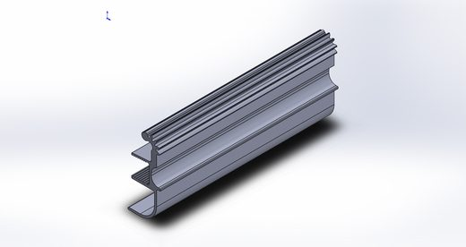
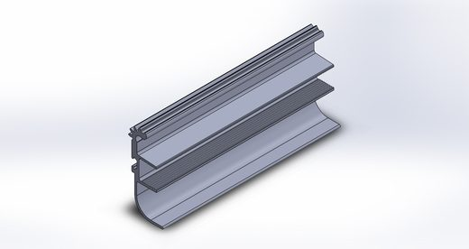
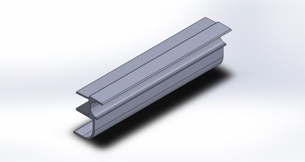
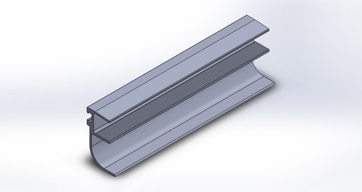

Referência técnica
Mapa geral de perfis
Fonte única de verdade para todos os códigos de perfil (SS-XXX / FE-XXXX) usados nos sistemas do catálogo. Perfis compartilhados entre categorias têm ficha única aqui, referenciada a partir de cada produto para evitar duplicação e divergência de dados.
1Relação de peças — desenho mestre
Fonte: Perfis Solução Sacadas_montagem atualizada — AutoCAD
2Índice de compartilhamento entre produtos
| Códigos | Usado em |
|---|---|
| F98, DSL-001, DSL-002, DSL-003 | Unique + Vista (compartilhado) |
| SS-027, SS-028, FE-0202, FE-0203, FE-0204, FE-0205, FE-0207, FE-0208 | Skin Vista (exclusivo) |
| SS-001, SS-004, SS-005, SS-006, SS-007, SS-008, SS-009, LT-077 | Blindex Sacadas + Unique + Vista (compartilhado) |
| SS-002, SS-003, SS-011, SS-012, SS-013, SS-018, SS-019, SS-108 | Blindex Sacadas (exclusivo) |
| SS-010 | Blindex Sacadas + Unique (compartilhado) |
| SS-014 | Unique + Vista + Skin Vista (compartilhado) |
| SS-016, SS-017, SS-024, SS-025, SS-026 | Vista + Skin Vista (compartilhado) |
| SS-020, SS-021, SS-022, SS-023 | Unique (exclusivo) |
3Perfis
39 perfis — clique para abrir a página do perfil
SS-001
Trilho Inferior
compartilhado

SS-002
Montante do Vidro 8

SS-003
Trilho Superior

SS-004
Calha Superior de Ajuste
compartilhado

SS-005
Calha de Ajuste
compartilhado

SS-006
Capa de Acabamento
compartilhado

SS-007
Capa de Acabamento
compartilhado

SS-008
Calha de Ajuste
compartilhado

SS-009
Prolongador
compartilhado

SS-010
Montante do Vidro 10mm
compartilhado

SS-011
Persiana PF01

SS-012
Tampa

SS-013
Persiana PF03

SS-014
Capa de União
compartilhado

SS-016
Montante de Giro Esquerdo
compartilhado

SS-017
Montante de Giro Direito
compartilhado

SS-018
Bando Rolo

SS-019
Trilho Fixo do Rolo

SS-020
Perfil Dobradiça Esquerda

SS-021
Perfil Dobradiça Direita

SS-022
Perfil de Acabamento Esquerdo

SS-023
Perfil de Acabamento Direito

SS-024
Montante do Quadro
compartilhado

SS-025
Arremate e Encaixe Vedação
compartilhado

SS-026
Encaixe Vedação
compartilhado

SS-027
Caixa de Drenagem

SS-028
Trilho Guia Superior e Inferior

SS-108
Montante do Vidro 12 mm

LT-077
Cantoneira Acab. Lateral
compartilhado

F98
Trilho Superior e Inferior
compartilhado

FE-0202
Bagete Passante

FE-0203
Capa Coluna Lateral

FE-0204
Acab. Vertical Meio Coluna - Passante

FE-0205
Bagete 22.5 Graus

FE-0207
Acab. Vertical Meio Coluna - Colante

FE-0208
Baguete Vedação Vertical

DSL-001
Polímero deslizante retangular
compartilhado

DSL-002
Polímero deslizante 1 rampa
compartilhado

DSL-003
Polímero deslizante 2 rampa
compartilhado